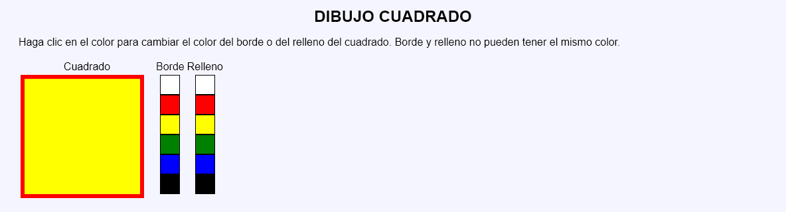

Dibujo cuadrado - Comentarios
- El programa podrá tener dos páginas y utilizar sesiones:
- La primera página muestra el cuadrado y las paletas para elegir el color de borde y de fondo del círculo:
- La primera vez que se abre la página se muestra el cuadrado con fondo blanco y borde negro.
- A su lado se muestran los colores posibles (blanco, rojo, amarillo, verde, azul y negro) para cada elemento (borde y relleno), en dos columnas.
- Al hacer clic en un color, cambiará el color del elemento correspondiente.
- El borde y el relleno no pueden ser del mismo color.
- La segunda página recoge el botón, modifica las variables de sesión y redirige a la primera página.
- La primera página muestra el cuadrado y las paletas para elegir el color de borde y de fondo del círculo:
- Si se intenta acceder directamente a la segunda página sin pasar por la primera o si se envía a la segunda página información distinta a la esperada, se redirigirá a la primera página sin informar al usuario.
- No se debe cambiar el nombre de los controles incluido en las plantillas.
- Al actualizar la primera página, no se modificará el contenido.
- Capturas de pantalla de ejemplo:

